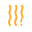
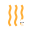
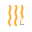
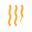
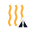

Weapon Module Icons (56)
area expander
battle focus buff
bleed edge physical
brittle trigger freeze
bullet size stat
chill chain freeze
corrosive touch energy
crit amplifier
crit calibrator
crossfire
cryo infuser freeze
damage up stat
 dash cooler
diffusion nozzle
dot on hit
ember mark fire
expanded magazine
fast reload
firepower diffusion
dash cooler
diffusion nozzle
dot on hit
ember mark fire
expanded magazine
fast reload
firepower diffusion

heat capacity heat

heat concentration heat

heat throttle

heat vent heat
ice prison freeze
impact coil
 inertial aim
inertial aim
 kill endurance
lifesteal on hit
lightning chain on hit
magazine pressure
molten splash fire
momentum haste
multi launcher
kill endurance
lifesteal on hit
lightning chain on hit
magazine pressure
molten splash fire
momentum haste
multi launcher

overheat boost heat
overkill recovery
penetration momentum
permafrost field freeze
pierce stat
plague seed dot
projectile speed stat
quick cycle
recovery magnet
reload blast damage
reload blast knockback
reload damage boost
reload move boost
reload offhand boost
reload shield boost
reload speed link
 rhythm converter
shatter strike freeze
stun on hit
subzero extension freeze
trail aoe freeze
vampiric surge
rhythm converter
shatter strike freeze
stun on hit
subzero extension freeze
trail aoe freeze
vampiric surge
 weakness relay
weakness relay